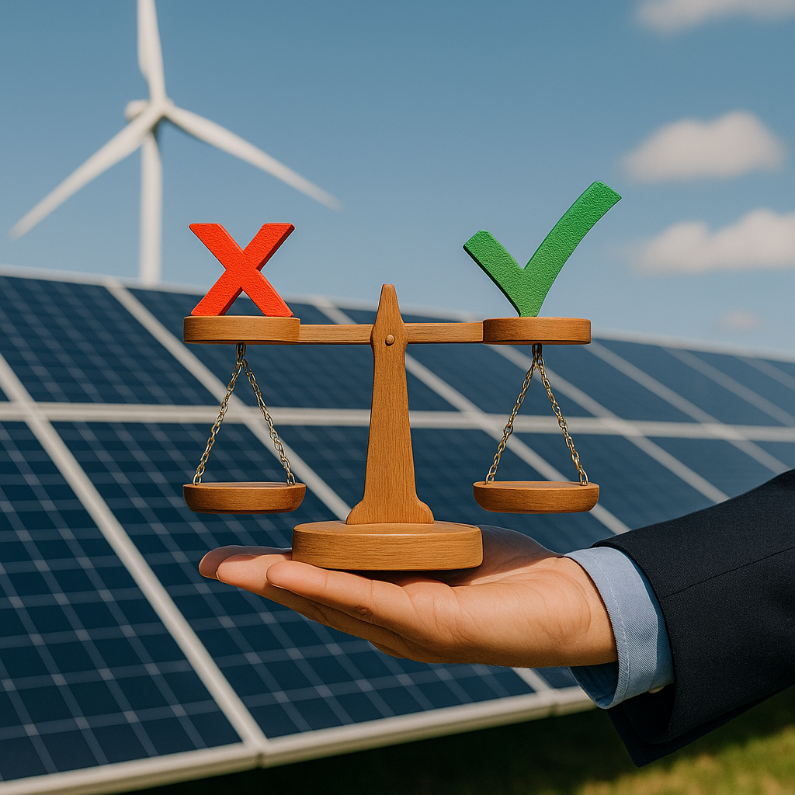
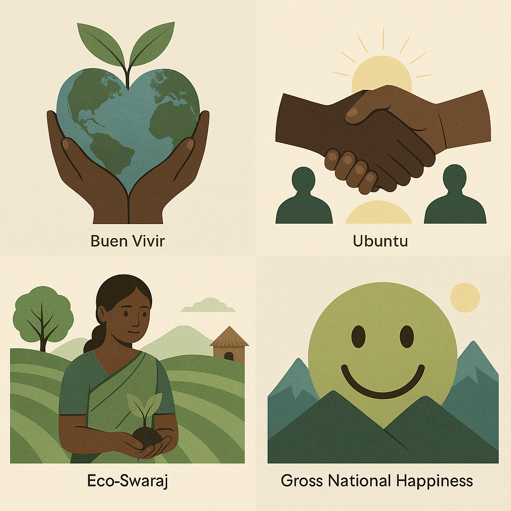
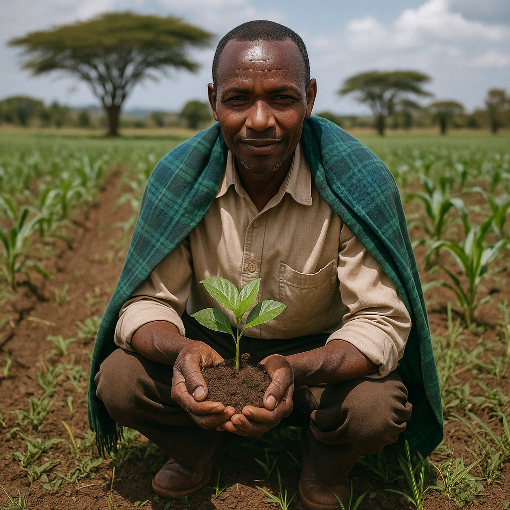

Somewhere along the way, we started to believe that neutrality was the highest form of climate ambition. “Net Zero by 2050” became the gold standard—plastered on corporate roadmaps, ESG reports, and keynote decks.
But here’s the uncomfortable truth:
Net Zero is no longer enough.
Not in a world of vanishing glaciers, collapsing food systems, and widening ecological debt.
The planet doesn’t need more pledges to do less harm.
It needs businesses that dare to do more good.
That’s where Net Positive Thinking comes in—a mindset that dares to imagine a world where enterprise restores ecosystems, uplifts communities, and regenerates the very systems it once depleted.
⚖️ Why Net Zero Fails (And How It Distracts Us)

At face value, Net Zero sounds responsible.
Measured. Scientific.
But in practice, it often looks like this:
- ✖️ Unverified carbon offsets from distant tree plantations
- ✖️ Disclosures that dodge scope 3 emissions
- ✖️ Sustainability reports padded with vague “carbon neutral” claims
It’s a ledger-based approach that frames the environment as a balance sheet.
Worse, it can lull companies into complacency, doing the bare minimum to appear aligned, without transforming anything upstream or downstream.
Net Zero is transactional.
Net Positive is relational.
It asks not just “How do we emit less?”
But “What are we giving back?”
🌿 The Net Positive Shift: From Mitigation to Regeneration
Net Positive Thinking dares to ask bigger questions:
- Can our operations restore biodiversity rather than degrade it?
- Can our value chains redistribute wealth instead of concentrating it?
- Can we become stewards, not just stakeholders?
It reframes business as a regenerative agent, not a necessary evil to be offset, but a system with the power to:
- 🌾 Heal soils
- 🌊 Clean waters
- 🛠️ Rebuild economies
- 🧘 Foster well-being
- 🪴 Reweave cultural continuity
This shift isn’t just moral.
It’s strategic.
Brands that regenerate become more resilient, community-trusted, and future-fit.
🌍 Radical Worldviews That Reshape the Narrative

Moving beyond net zero requires not just new metrics, but new mindsets.
Here are four worldview frameworks that reimagine what “growth” and “progress” can mean:
🔁 Buen Vivir (Ecuador/Bolivia)
A philosophy rooted in Indigenous Andean cosmology, Buen Vivir prioritizes harmony with nature, community, and self.
It rejects extractivism, overconsumption, and Western metrics of wealth.
🧭 Ubuntu (Southern Africa)
"I am because we are."
Ubuntu frames identity as deeply relational.
A business grounded in Ubuntu asks: Are we enhancing the life of the whole?
In practice: inclusive governance, communal ownership, dignified labor systems.
🌱 Eco-Swaraj (India)
Eco-Swaraj or ecological self-rule blends Gandhian self-reliance with environmental stewardship.
It empowers communities to manage local ecosystems with deep respect for traditional knowledge.
In practice: decentralized water systems, seed sovereignty, community-managed forests.
😊 Gross National Happiness (Bhutan)
This framework shifts national success away from GDP and toward well-being, cultural preservation, and ecological resilience.
It evaluates policies based on their contribution to collective joy and balance.
These worldviews offer value systems beyond reductionism.
They invite us to imagine thriving, not just surviving.
🛠️ How Brands Can Adopt Net Positive Thinking
Let’s translate this philosophy into practical action across five business dimensions:
🔄 Regenerate, Don’t Just Reduce
- Transition supply chains to regenerative models: soil-health, agroecology, cradle-to-cradle design
- Make restoration a baseline, not a bonus
- Set goals for water-positive, nature-positive, and culture-positive impact—not just carbon
📚 Educate, Don’t Obfuscate
- Scrap the jargon-heavy ESG reports
- Use storytelling, data visualization, and plain language to democratize accountability
- Be radically transparent about your process—not just your progress
💵 Reinvest, Don’t Just Divest
Redirect funds toward:
- Community-led conservation
- Indigenous land guardianship
- Worker-owned renewable ventures
- Move from compliance capital to solidarity capital
⚖️ Decenter the Boardroom
- Set up community advisory boards
- Design impact frameworks co-authored by affected stakeholders
- Give real decision-making power to those living with your business's consequences
🔮 Measure What Truly Matters
Go beyond carbon to include:
- 🍀 Biodiversity restored
- 🧘 Mental health improved
- 🎓 Knowledge transferred
- 💬 Language and cultural heritage protected
- 🌍 Community sovereignty upheld
Use multi-dimensional ROI to capture what traditional metrics miss.
✨ Sparks of a Net Positive Shift

We're already seeing glimpses of this shift:
- 🌾 Soil carbon programs in Kenya restoring degraded rangelands
- 🛶 Amazonian women’s cooperatives reviving bioeconomies rooted in cultural practice
- 🏞️ Bhutan’s carbon-negative model proving that happiness, not hustle, can be a development strategy
These aren’t “best practices.”
They’re reminders of what’s possible when growth honors life.
(We’ll explore each in depth in the upcoming carousel:
(“5 Radical Worldviews That Inspire Regenerative Thinking”)
💬 Final Thoughts: It’s Time to Think Bigger

As a sustainability-focused content strategist from the Global South, I’ve seen both ends of the spectrum:
So 🚨 Global brands obsessed with numbers, yet blind to nuance
🪷 Local communities preserving ecosystems with no PR or platforms
If we’re serious about planetary healing, we must:
- Embrace worldviews that restore, not just extract
- Fund life-giving systems, not life-depleting ones
- Replace eco-performance with eco-accountability
Net Positive isn’t the next marketing buzzword.
It’s a return to what our ancestors already knew:
🌿 When you care for the land, the land cares for you.